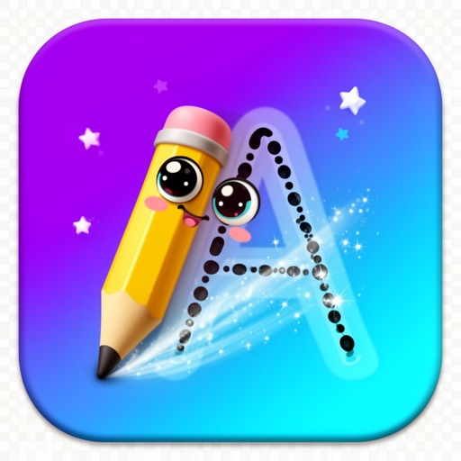

Native iOS engineering
Swift and Objective-C across UIKit, SwiftUI, and Combine—from adaptive interfaces and app architecture to debugging, testing, and optimization.
Sydney, Australia · Mobile Engineering
I’m Amit Gupta, a Senior iOS Engineer and Mobile Tech Lead with 10+ years building mobile apps. My experience spans Swift and Objective-C, 3+ years of React Native, Kotlin Multiplatform, Flutter, and AI-enabled mobile work.
Australian visa · Subclass 482 · Primary applicant · Valid until October 2027
Technical expertise
10+ years in mobile engineering, with deep iOS experience, React Native, Kotlin Multiplatform and on-device AI skills.
Swift and Objective-C across UIKit, SwiftUI, and Combine—from adaptive interfaces and app architecture to debugging, testing, and optimization.
MVVM, VIPER, VIP, RIB, Redux, SOLID principles, design patterns, protocol-oriented and reactive programming.
Certificate pinning, RSA encryption, IXGuard, device fingerprinting, authentication, authorization, Core Data, SQLite, and Realm.
Test-Driven Development, CI/CD, Fastlane, Bamboo, app thinning, on-demand resources, and app-size optimization.
React Native for 3+ years, Kotlin Multiplatform (KMP), and Flutter project experience for iOS and Android.
On-device AI with Apple Foundation Models, text recognition with Google ML Kit, and AI-assisted engineering workflows.
Approximate durations from career and project dates; SwiftUI counted from its 2019 launch.
Selected impact
Performance improvements, greenfield delivery, team leadership and security-minded engineering.
Removed unused code, libraries and resources; applied app thinning and on-demand resources.
Guided Avis and Budget iOS development from the ground up, mentoring teammates and coordinating with clients.
Experience and training across certificate pinning, RSA encryption, device fingerprinting and app obfuscation.
Career experience
April 2011–Present · iOS engineering, project leadership, and mobile product delivery.
May 2022–Present
Aug 2016–May 2022
Sydney, Australia · Pune, India
Associate Consultant Engineering · Westpac banking application; Senior iOS Developer.
Assistant Consultant · Technical Lead for Avis and Budget car rental apps; led development from the ground up, mentored junior developers, and worked with clients.
Sep 2015–Aug 2016
Nagpur, India
Senior iOS Developer · Developed the Jio HealthHub healthcare app using Objective-C and VIPER.
Mar 2014–Sep 2015
Pune, India
Software Engineer · Contributed to gym-training, healthcare, and hospitality applications using Swift and Objective-C.
Dec 2012–Mar 2014
Jaipur, India
Software Engineer · Built Objective-C survey and gaming applications.
Jan 2012–Dec 2012
Hyderabad, India
Software Engineer · Developed Aguva, an Objective-C local discovery app for hotels, medical facilities, stores, and offers.
Apr 2011–Dec 2012
India
Trainee Software Engineer · Began mobile development with Objective-C and Symbian; removed unused code and resources to reduce app size by 30%.
AI in my engineering workflow
I use AI to accelerate engineering work while staying accountable for the code, the tests, and the final decisions.
Use AI assistance for codebase exploration, implementation drafts, test scenarios, debugging investigation, and technical documentation. Review the output, verify behavior, and run appropriate checks before treating it as finished.
Apply agentic AI to break work into steps, inspect relevant context, make coordinated changes, and run targeted validation. Keep scope bounded and review the resulting changes before they are accepted.
Professional work
Client and independent projects across mobile products, ordered newest to oldest. Confidential work is described at a high level.
Senior iOS Developer · TCS · May 2022–Present
Contribute to the Westpac iOS banking application, working across implementation, debugging, and testing. The project uses a modern Swift stack and a structured architecture to support ongoing product development.
College networking · iOS, Android and web
Contributed to a college networking product built with Flutter for mobile and a Node.js-backed web stack.
TCS · Mar 2018–May 2022
Helped build the Swift car-rental app from the ground up; led delivery, mentored teammates and coordinated with clients.
TCS · Aug 2016–Mar 2018
Helped build and deliver the Swift car-rental app, collaborating with clients and teammates.
GlobalLogic · Sep 2015–Sep 2016
Developed and optimized a healthcare application using Swift and VIPER.
Mapped nearby services using Google Maps.
No longer available in the App Store
Gym trainer and client fitness app.
No longer available in the App Store
Payroll application built using Objective-C and MVVM.
No longer available in the App Store
Universal hospitality app for FRHI.
View App Store listingPaid survey rewards app built using Objective-C and MVC.
Mobile gaming app developed as part of Konstant project work.
Aviation FBO app built using Objective-C and MVC.
No longer available in the App Store
Local guide to nearby hotels, medical facilities and stores, including available offers.
No longer available in the App Store
OTT movie and live-TV app with audio and video streaming.
No longer available in the App Store
✳ Client work is described at a high level; no confidential product or customer details.
Personal projects
Independent products across native iOS and React Native. Each card links directly to its live App Store listing; source code and private implementation details are not linked here.

500+ downloads
A native iOS app that helps young children explore letters and phonics.
On-device AI vocabulary tutoring, stories, example sentences and translation on supported iOS devices, plus text recognition for scans.
A personal file-locker app for keeping files together in one place.
A React Native app for reading textbook material on mobile.
Leadership & delivery
My leadership experience is project-focused and hands-on: guiding development, contributing technically, mentoring teammates, and working with clients to move delivery forward.
Education
Degree
RGPV, Bhopal
Jul 2006–Jun 2010 · First Grade
Higher Secondary
Completed 2006 · Grade A
High School
Completed 2004 · Grade A
Next opportunity
For Senior iOS Engineer, Mobile Tech Lead, or project leadership opportunities, get in touch.
gupta.amit6700@gmail.com